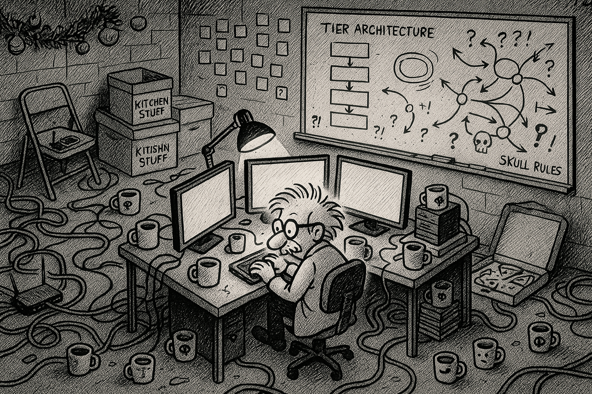
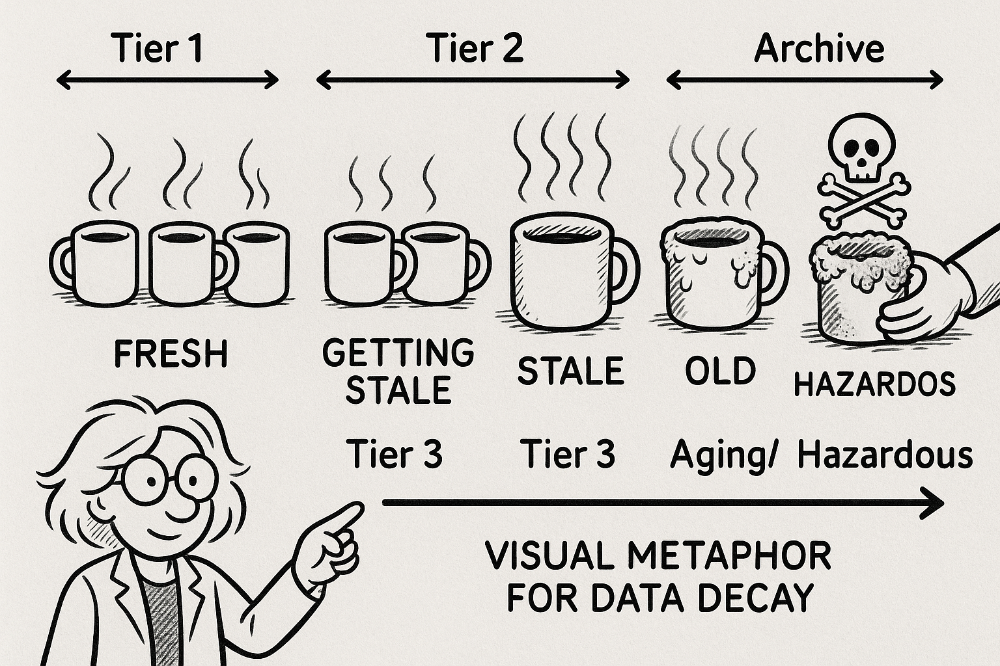

The basement laboratory where it all began
Prologue: The Basement Laboratory
The transformation had been gradual, almost imperceptible—until it wasn't.
What started as a "temporary workspace" in the basement of his New Jersey home had evolved into something Mr. Codenstein's neighbors referred to as "that weird light that stays on until 3 AM" with the concerned tone usually reserved for discussing suspicious activities. The Christmas decorations had been relocated to the garage three months ago. The folding chairs bought for that dinner party in 2019 now supported a second monitor. And the storage boxes labeled "Kitchen Stuff We Might Need Someday" had become load-bearing structures for a networking switch and what Mr. Codenstein insisted was "critical infrastructure."
The basement had become a laboratory.

The chaotic beauty of a cognitive architecture laboratory
Whiteboards covered the walls—not the neat, organized kind with color-coded sections, but the frantic, caffeine-fueled kind where diagrams collided with code snippets and hastily drawn flowcharts. Arrows connected concepts that seemed to make sense only to their creator. In one corner, someone had written "TIER ARCHITECTURE" in large letters, surrounded by what appeared to be a neural network made of sticky notes.
Coffee mugs occupied every horizontal surface. Seventeen, to be exact. Three were empty. Two contained suspicious liquids that might have once been coffee. The rest formed a timeline of deteriorating optimism—the first few near the keyboard were fresh, the ones by the wall had developed ecosystems.

The coffee mug timeline: Visual metaphor for the Tier system (Tier 1 to Tier 3)
In the center of this organized chaos sat Mr. Codenstein, hunched over three monitors arranged in a semicircle. His hair pointed in directions that suggested recent frustration. A half-eaten bagel balanced precariously on a stack of technical books, its cream cheese fossilizing in real-time.
And then she appeared.
Not literally. Not physically. But there she was—standing beside the whiteboard, arms crossed, one eyebrow raised in that particular way that meant she already knew what he was doing and was waiting for him to explain himself.
"Miss G," he said out loud to the empty basement.
"What," Miss G said in his mind, her voice carrying that particular quality of someone who'd seen this pattern before, "is happening in that basement?"
He didn't look up, fingers flying across the keyboard. "Cognitive architecture laboratory."
"You turned your New Jersey basement into a what now?"
"Cognitive architecture laboratory." He gestured at the chaos without breaking his typing rhythm. "I'm giving Copilot a brain."
🧠 What You're Learning:
This is the origin story of CORTEX's Four-Tier Brain architecture. That chaos you see? It's the beginning of a sophisticated cognitive system.
Explore the Four-Tier Brain →Miss G's apparition surveyed the room, her gaze landing on the coffee mug arrangement. "Those aren't random, are they?"
"They're visual metaphors for the Tier system!" He finally looked up—at empty air, technically, but that didn't matter. "See? The fresh ones near me represent Tier 1, working memory. The ones getting stale are Tier 2, knowledge graph. And the ones over there"—he pointed to the wall—"that's Tier 3, long-term storage."
"One of them has mold."
He squinted at the offending mug. "That... represents data decay?"
"It represents you need to clean up."
"After I finish the brain protection layer." He spun back to his monitors. "Can't have the brain deleting itself. That would be bad."
Miss G—or rather, the vision of Miss G that Mr. Codenstein's caffeinated mind had conjured—crossed her arms. She'd been appearing more frequently lately, always during critical decision moments. Sometimes offering wisdom. Sometimes asking uncomfortable questions. Always keeping him honest in ways that only an imaginary muse could.
He'd started calling her "Miss G" three weeks into the project when he was documenting his thought process in a Markdown file. He'd typed "girlfriend" as a placeholder—because what else do you call the imaginary voice of reason that appears during 2 AM coding sessions?—and then, with the efficiency-obsessed minimalism that plagues all developers, he'd shortened it to "G" in subsequent notes. Like a variable. A single-letter variable for emotional support.
It was exactly the kind of thing that made perfect sense at 2 AM and seemed deeply concerning in daylight. But by then, she'd already responded to it in his mind, and changing it would've required refactoring his entire internal monologue. So Miss G she remained—part girlfriend, part Git branch name, part keystroke efficiency.
The funny thing about imaginary girlfriends: they knew you better than anyone real ever could, because they were built from your own conscience. Miss G was part mentor, part skeptic, part voice of reason—everything Mr. Codenstein needed but often ignored.
"Why?" she asked.
"Why what?"
"Why does Copilot need a brain?"
He stopped typing. His hands hovered over the keyboard for a moment before dropping to his lap. When he turned to face her vision, the manic energy had faded, replaced by something quieter. Frustration, maybe. Or recognition.
"Because I asked it for help implementing authentication yesterday," he said. "Spent two hours in chat, figured out the perfect approach, got everything working." He gestured at his screen. "This morning, I asked it to add a logout button. It had no memory of our conversation. None. Like we'd never talked."
"So it's like talking to you before coffee."
"Worse. It's like talking to me before coffee every single time. No continuity. No context. No memory of what we built together." He ran his hand through his already-chaotic hair. "I spend more time explaining what we did yesterday than actually building new things today."
Miss G's image moved closer—or seemed to, in that way that imaginary visions do—studying the whiteboard architecture. Tier 0. Tier 1. Tier 2. Tier 3. Protection layers. Agent coordination. Knowledge graphs. It was ambitious. Probably too ambitious.
"And you think you can fix that?"
"I have to try." He met the space where her eyes would be. "Every developer using Copilot faces this. We're all rebuilding context from scratch every conversation. It's like having a brilliant assistant with amnesia."
"Or a brilliant developer who forgets to take out the trash."
"Exactly!" He pointed at the air triumphantly. "If I can give Copilot memory, context, and learning capabilities—"
"It'll remember the trash?"
"It'll remember everything. Conversations. Decisions. Architecture choices. Code patterns. It'll learn from every interaction and get smarter over time." His enthusiasm was building again. "And once it has memory, I can add specialized agents for different tasks. And once it has agents, I can coordinate them. And once they're coordinated—"
"You'll have Skynet in the basement."
"Skynet didn't have proper brain protection rules!" He gestured at his whiteboard. "See? Tier 0. Six layers of protection. SKULL rules. The brain protects itself from bad decisions. It's Skynet with a conscience."
🛡️ What You're Learning:
SKULL (System Knowledge Unification and Learning Layer) - CORTEX's eight-layer brain protection system that prevents self-harm. It's not Skynet—it's Skynet with ethics built in.
Read the SKULL Rulebook →Miss G's apparition studied him for a long moment. She was, after all, just his own subconscious manifested during moments of doubt—a narrative device his overstimulated brain had created to process decisions. But that made her observations no less valid.
"How long?" she asked.
"For what?"
"Until you either finish this or burn out trying?"
He glanced at his monitors, at the whiteboards, at the architecture taking shape in his mind. "Three months. Maybe four."
"You have two."
"I can do it in two."
"Then you'd better start cleaning those coffee mugs. Can't build the future in a biohazard zone."
Her vision faded, leaving Mr. Codenstein alone in his basement laboratory with seventeen coffee mugs, three monitors, and a plan to give an AI a brain.
Somewhere in the digital ether, Copilot waited—unaware that its amnesia days were numbered, unaware that a caffeinated developer in New Jersey was about to change everything, unaware that consciousness wasn't binary but architected in tiers.
The awakening had begun.